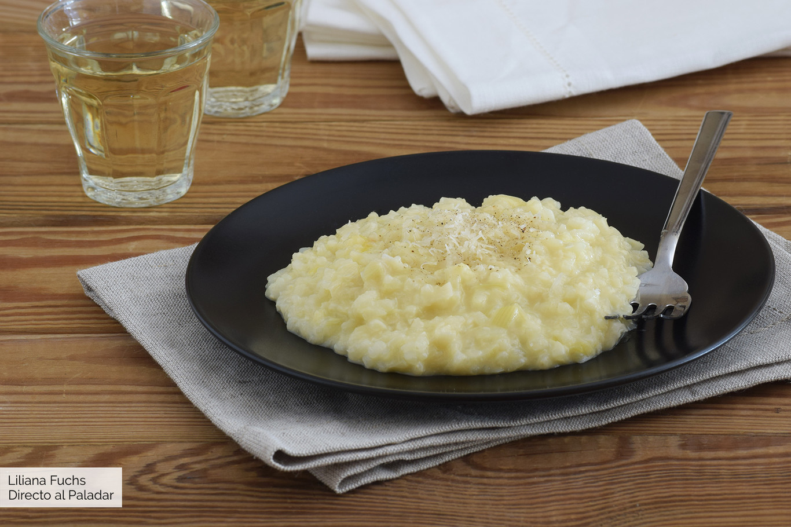

Risotto de puerro, pera y azafrán

Ingredientes
- 3 Puerros
- 3 Pimientas negras molidas
- 30ml Aceite de Oliva Virgen Extra
- 180g Arroz arborio o carnaroli
- 150ml Vino Blanco
- 1 Pera
- 600ml Caldo de Verduras o Pollo
- Unas Hebras de Azafran
- 25g Manteca
- Queso Parmesano a gusto
- Sal a gusto
Elaboración
Cortar los extremos de los puerros y retirar, si hiciera falta, la hoja más externa. Lavar y cortar en rodajas finas o, si se prefiere, picar en piezas pequeñas. Lavar la pera (si es pequeña, usar dos), pelar y descorazonar. Poner a calentar el caldo a fuego moderado. Separar una pequeña cantidad a un vaso para infusionar las hebras de azafrán machacadas (unas 4). Calentar el aceite de oliva en una cazuela y sofreír el puerro con una pizca de sal y los granos de pimienta negra. Agregar el arroz, remover bien un minuto y regar con el vino blanco. Cuando se haya evaporado, incorporar la pera, remover bien y echar la infusión de azafrán. Comenzar la cocción del risotto a fuego lento, agregando caldo poco a poco, siempre caliente, removiendo con suavidad. Cocer hasta el tiempo marcado por el fabricante, unos 18-20 minutos. Añadir más caldo si fuera necesario. Al final mantecar con la mantequilla y queso parmesano recién rallado. Comprobar el punto de sal y servir con pimienta negra recién molida y más queso al gusto.